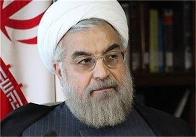

|
|
صحبتهای مهم حسن روحانی دربارهٔ ماهواره، تلویزیون، فیلترینگ، فیسبوک و اینترنت: در عصر انقلاب دیجیتال، نمیتوان در قرنطینه زندگی و حکومت کرد
سه شنبه11 تیر 1392
کافه سینما- حسن روحانی، رییس جمهور منتخب مردم ایران به تازگی گفت و گویی فرهنگی با مجله چلچراغ داشته که بخش های کوتاهی از آن پیش از این در کافه سینما نقل شده. متن کامل این گفت و گو را در ادامه بخوانید:

جناب آقای روحانی، جوانیتان را چطور گذراندید؟ چقدر جوانی کردید؟
من از 12 سالگی راهی فراگیری علوم دینی شدم و دوران جوانی بیشتر به علم و تحصیل گذشت.
اگر بخواهید نسل جوان دوران خودتان را توصیف کنید، چگونه توصیف میکنید؟ جوانهای آن موقع چطوری جوانی میکردند؟ فرق جوانی کردن آن موقع با الان چیست؟
میدانید که مفهومی مثل جوانی و جوانی کردن، همواره محتوای یکسانی نداشته و با شرایط زمانی تغییر کرده است. جوانی کردن تابع شرایط زمانی، امکانات هر دوره و ابزارهایی است که در اختیار افراد قرار میگیرد. در دورهای که جوانی من گذشت، امکانات و ابزارهای امروز و البته برخی مشکلات امروز وجود نداشت. احساس کلی نسل من این است که هزینه زندگی خیلی پایینتر بود و افراد راحتتر میتوانستند به خواستههای جوانی نظیر شغل یا ازدواج دسترسی پیدا کنند.
برخی در مورد جوانان نسل چهارم امروز (دهه هفتادیها) میگویند که جوانهایی سطحی و بیخیال و بیریشهاند. شما چقدر به این اتهام یا توصیف نسلی باور دارید؟ نوههای شما هم ظاهرا باید در همین سن و سال باشند. آنها را چگونه میبینید؟
من فکر میکنم سرعت تغییرات جهان و به دنبال آن تغییر دیدگاههای افراد در نسلهای مختلف چنان زیاد شده است که نسل قبلی خیلی از آرمانها و آرزوهای نسل جدید را نمیفهمد. در دنیای جدید همه نسلهای قدیمیتر از نسل جدید ناراضی و شاکیاند. تفاوت داشتن دو نسل به معنای بیریشگی نسل جدید نیست. برای مثال، نسل جدید دنبال آزادی، عدالت، سرافرازی بیشتر در جهان، پیشرفت فنی و علمی، وضع اقتصادی بهتر و بسیاری از آرمانهایی است که در سالهای دولت اصلاحات بیشتر میشد بروز آنها را دید. کدام یک از اینها نشان بیریشگی است؟ هیچکدام.
از طرف دیگر، خیلی از واکنشهای جوانان که نسل قبلی نمیپذیرند، محصول شرایطی است که نسل قبلی یا دولتهای نسل قبل ایجاد کردهاند. امروز بیکاری، بالارفتن سن ازدواج و برخی آسیبهای اجتماعی در بین جوانان شایع است و بر اثر این وضعیت، رفتارهای خاصی از جوانان بروز میکند. وظیفه مدیران و نسل قبلی این است که شرایط زندگی بهتر را برای جوانان فراهم کنند و بعد انتظاراتی از آنها داشته باشند. نسل قبلی بالاخص مدیران سه دهه گذشته بیحساب از دین خرج کردند و ناکارآمدیها را با دین توجیه کردند و حالا خیلی از آنها از تضعیف باورهای دینی جوانان ناراضیاند. از ابتدا نباید این کار را میکردند.
مصائب و مواهب روحانی بودن؟
روحانی بودن همانطور که فرمودید، دشواریها و مواهبی دارد. از دشواریهای آن این است که فردی که لباس روحانی بر تن دارد، باید ملاحظات اجتماعی زیادی را رعایت کند که شهروندان غیرروحانی از قید آن آزادند. عمری با اهل کتاب، دانش و معرفت بودن یکی دیگر از این مواهب است.
وضعیت فعلی جمهوری اسلامی چقدر با آرمانها و تصورات اولیه شما سازگار است؟ و اگر نیست چرا؟ جنابعالی چقدر در این وضعیت نقش داشتید؟
ببینید، من هم بخشی از جامعه امروز ایران هستم و از آنجا که در هر زمانهای گویی روح کلیای حاکم است، و احساس کردن این روح کار سختی نیست، شما و خوانندگانتان میتوانند احساس من را درک کنند. من که از موضع منتقد وضع موجود وارد انتخابات شدهام و اصلا چون احساس خطر میکنم پا به میدان گذاشتهام، ولی حداقل چهار کاندیدای منتسب به جریان اصولگرا هم که بیش از همه حداقل در هشت سال گذشته مدافع وضع موجود بودهاند و قدرت اجرایی را در جریان خود در دست داشتهاند نیز منتقد وضع موجودند. به نقدهای آقای ولایتی علیه سیاست خارجی، نقدهای آقای قالیباف و رضایی علیه وضع اقتصادی توجه کنید و آن وقت میبینید که اگر ما به آرمانهای خود رسیده بودیم و منظور ما از جمهوری اسلامی این بود، که نباید اینقدر منتقد میبودند. تصور ما استقلال در همه ابعاد بود، امروز برای ضروریات اولیه زندگی به واردات نیاز داریم، آرمان ما جمهوریت مدنظر قانون اساسی بود، امروز جمهوریت زیر سایه قرائتی از اسلامیت در حال فراموشی است، تصور ما جامعهای اخلاقی بود، ولی امروز اخلاق در حال سقوط است.
به نظر من، به تدریج در فرایند جلو آمدن انقلاب، قانون اساسی به صورت شخصی و سلیقهای تفسیر شده است. مقدس کردن خیلی چیزها و باورها، آنها را از دسترس نقد دور نگه داشت. تاکتیکها استراتژی شدند، و ما خیلی در گذشته باقی ماندیم. عرصههای سیاست، اخلاق و اقتصاد در هم ترکیب شدند و دست آخر همه سیاستزده شدند. برخی اصول قانون اساسی خیلی پررنگ و برخی دیگر خیلی کمرنگ شدند و نتیجه شد همین عدم توازنی که شاهدش هستیم. آزادیها و حقوق مردم کمرنگ شد، ولی حقوق حاکمان دائم مورد تاکید قرار گرفت. بگذارید من به صراحت به خوانندگان شما بگویم که بستن فضای نقد هر قدر هم که با گامهای اولیه و کوچک شروع شود، به تدریج به خفقان و ناکارآمدی میانجامد.
وضع موجود حاصل رفتار و کردار همه ماست، ولی من هیچ وقت با تندرویهایی که وضع را به اینجا کشانده است، موافق نبودهام. تاریخ را بالاخره مینویسند و سهم آدمها مشخص میشود. اما من در هر مقامی که بودهام اهل افراط، غوغاسالاری و قربانی کردن منافع مردم نبودهام. عملکرد من را در پرونده هستهای باید دید. من مانع شدم پرونده ما به شورای امنیت برود، و از آغاز شدن فرایند تحریمها علیه ایران جلوگیری کردم و مانع آغاز جنگ شدم.
برخوردی که این سالها با جوانها میشود، مثل محدودیتهای حضور و نشاط اجتماعی، گشت ارشاد و امثالهم چقدر با ایدهآل شما از جمهوری اسلامی سازگار است و چقدر خلاف آن آرمانهاست؟ و شما با این موضوع چه خواهید کرد؟
من قطعا با این برخوردها مخالفم. اینها حاصل همان قرائت و برداشت خاص از اسلام و قانون اساسی است. برای اینکه نگاهم به مسئله روشن شود، دیدگاهم را به مسئله حجاب و عفاف برای شما تشریح میکنم. خیلی از این برخوردها ناشی از دیدگاهی است که چنین شادی و نشاطهایی را گامهای اولیه به سوی تضعیف عفت عمومی میبیند و بنابراین تشریح دیدگاه من مناسب است.
به نظرم، عفیف بودن چیزی فراتر از حجاب داشتن است. به نظر من اگر زنی یا مردی حجاب رسمی مد نظر ما را رعایت نکند، عفیف بودنش زیر سؤال نمیرود. قبل از انقلاب زنان زیادی در جامعه ما حجاب نداشتند، ولی آیا انسانهای عفیفی نبودند؟ من هشدار میدهم که حجاب را عین عفاف ندانیم. به نظر من زنان زیادی از جامعه ما حجاب مطلوب قانون را ندارند، ولی عفیف هستند. عفت شاخصهای زیادی دارد. کما اینکه میتوان کسانی را هم یافت که ظاهر مطابق قانون دارند و حجاب دارند (چه مرد و چه زن) ولی اصول عفت را رعایت نمیکنند. بنابراین تاکید ما باید بر عفت باشد. باید ببینیم عفت را چه چیزی تهدید میکند. به نظر من عفت مردم ما را فقر اقتصادی و ناتوانی در ازدواج، بیشتر تهدید میکند تا رعایت حجاب مطابق استانداردهایی که عدهای دوست دارند و تعریف کردهاند.
این را چرا گفتم؟ چون یک عدهای فکر میکنند اگر جوانان با هم کوه بروند، در یک مراسم شادی شرکت کنند، یا در خیابان با هم قدم بزنند، عفت جامعه خدشهدار میشود. اما واقعیت این است که عفت را چیزهای مهمتری تهدید میکند. برخی از برخوردها هم ناشی از نگاه پلیسی و امنیتی به جامعه است، نگاهی که همه چیز را سیاسی میبیند. در حالی که اجازه دادن به برگزاری برخی مراسم، شدت کنش و دیدگاه سیاسی را کاهش میدهد. در ضمن، مطمئن باشید که در ایدهآلهای جمهوری اسلامی، نفی شادی و نشاط نبود. در هیچ کدام از شعارهای ابتدای انقلاب شما شعار علیه شادی و شور جوانی پیدا نمیکنید.
این روزها وضعیت دانشگاهها چندان رو به راه و قابل دفاع نیست. تفکیک جنسیتی دانشجویان، دانشجویان ستارهدار به دلایل سیاسی و امثالهم. شما برای بازگرداندن فضای دانشگاهها به نشاط و شادابی چه نگاهی دارید؟
دانشگاه برای رشد به استقلال آکادمیک نیاز دارد. یعنی رئیس دانشگاه منتخب اعضای دانشگاه و طبق روال مشخصی باشد. در چنین دانشگاهی، که رویهای دموکراتیک بر انتخاب مدیرانش حاکم باشد، کادر مدیریت دانشگاه زیر بار اقداماتی خلاف منطق آزادی و استقلال علمی نمیرود. ما در دولت اصلاحات تجربه آزاد گذاشتن دانشگاهها را داریم. آن بخش از ضرباتی که به دانشگاه خورد هم نتیجه لجاجتها و تنگنظریهای جریان اقتدارگرا بود. ببینید یک زمانی در اوج تمدن اسلامی، در دربار خلیفه عباسی، در حضور علمای مسلمان، افراد غیرمعتقد به اسلام در مجلسی که خلیفه تشکیل میداد، درباره خدا تشکیک میکردند و در باب توحید بحث میشد. در چنان فضایی تمدن اسلامی به اوج میرسد. فضای دانشگاه با آزادی به شکوفایی میرسد. البته بعد از چندین سال برخورد پلیسی با دانشگاه، طبیعی است که آزادی دادن در ابتدا سبب بروز برخی رفتارها هم میشود. باید اینها را تحمل کرد و اعتماد متقابل بهوجود آورد.
اصولا چقدر به تفکیک جنسیتی در عرصههای مختلف اجتماعی اعتقاد دارید؟
به هیچ عنوان دنبال تفکیک جنسیتی نیستم. هیچ جامعهای در طول تاریخ نتوانسته است تفکیک جنسیتی کند، در جامعه پیچیده و پر از ارتباطات امروز نیز تفکیک جنسیتی هیچ کاربردی ندارد.
این سالها بسیاری از جوانان هیچ امید و آیندهای را برای خود متصور نیستند و از همین رو به شدت موج مهاجرت به آن سوی مرزها (حتی بدون هدفهای تحصیلی) رو به گسترش است. در این مورد چه باید کرد؟
باید اول جهت حرکت کشور را درست کنیم و معلوم شود قصد ما حرکت در جهتی است که امیدبخش است. من یک مثال بزنم تا درک مسئله سادهتر بشود. سطح کلی کیفیت زندگی در هندوستان پایینتر از ایران است. صدها میلیون هندی حتی به دستشویی بهداشتی هم دسترسی ندارند. ولی رشد اقتصادی و حرکت هند به سوی جامعهای توسعهیافتهتر، امیدی در دل متخصصان هندی ایجاد کرده و متفکران هندی در درون دموکراسی هند که بزرگترین دموکراسی دنیا خوانده میشود، اثربخشیای برای خود احساس میکنند که آنها را امیدوار کرده است و این جامعه دارد با نیروی متخصصان خود جلو میرود. البته منظورم این نیست که در هند مهاجرت نخبگان وجود ندارد، ولی مثل ما نیست.
مشکل ما این است که امید را از افراد گرفتهایم. آن که 100 تومان سرمایه دارد و میداند روند جاری او را به 150 تومان میرساند، خیلی شادتر از کسی است که 1000 تومان سرمایه دارد و میداند روند جاری او را به 500 تومان میرساند. اولی وضعیت هند و دومی وضعیت ماست. ما باید با نجات اقتصادی، اصلاح سیاستها و تغییر دیدگاهمان به جهان و اداره کشور، وضعیت اول را حاکم کنیم و در این صورت احساس اثربخشی نخبگان افزایش مییابد. اما وقتی هر اهل فکری را از دانشگاه بیرون کنیم، هر صنعتگر صاحبفکر و ایدهای را از اعتبارات محروم کنیم، و دانشجو را ستارهدار کنیم، وضعمان روز به روز بدتر میشود.
من شخصا سعی کردهام در مرکز تحقیقات استراتژیک مجمع تشخیص مصلحت نظام متخصصان و اهل فکر از هر سلیقهای را که توانایی تفکر، تحقیق، و دادن راهبرد دارند، گرد هم بیاورم. در آن مرکز راست و چپ، اصولگرا و اصلاحطلب کنار هم هستند. این یعنی با کسی برخورد حذفی نداریم.
شما فضای مجازی و اینترنت را تهدید میدانید؟ شبکههای اجتماعی مثل فیسبوک چطور؟ چه نظری در مورد فیلترینگ گسترده اینترنت دارید؟
فضاهای مجازی ابزارند، و هر ابزاری میتواند تهدید یا فرصت باشد. داروها برای درمان بیماری ساخته میشوند ولی میشود با آنها خودکشی هم کرد. این ابزارهای در ضمن ناگزیر هم هستند. من یادم میآید که حتی آیتالله هاشمی رفسنجانی هم شبکههایی مثل فیسبوک را پدیدههای مبارکی خوانده بودند. واقعا هم همین گونه است. در همه تاریخ، به نظر من از ابزارها بیشتر استفاده مثبت شده تا استفاده منفی. شما نگاه کنید ببینید از انرژی هستهای فقط دو بار برای کشتار گسترده استفاده شده است، ولی امروز بیش از 400 نیروگاه هستهای در جهان برق تولید میکنند، و انرژی هستهای در کشاورزی، صنعت و... کاربرد دارد. مگر جهان با انفجار بمب اتمی، کل انرژی هستهای را کنار گذاشت؟ نه.
در ضمن در نظر داشته باشید که خیلی از اقدامات علیه آزادی فضای مجازی که توسط افراد و نهادهای خاص صورت میگیرد، مقاصد خیرخواهانه ندارد. یعنی خیلی هم دلشان به حال اخلاق عمومی یا تهدیدهای این فضاها علیه جوانان نسوخته است. مقاصد سیاسی دارد. از آزادی موجود در این فضاها میترسند، دنبال محدود کردن اخبار هستند، و این محدود کردنها هم جواب نمیدهد. کاش طرفداران فیلتر کردن توضیح میدادند که در محدود کردن دسترسی مردم به کدام خبر موفق بودهاند؟ کدام خبر مهمی در چند سال اخیر وجود داشته که فیلترینگ باعث عدم دسترسی مردم به آن شده است؟ این اقدامات حتی مانع دسترسی به سایتهای غیراخلاقی هم نشده است. فیلترینگ گسترده جز اینکه دیوار بیاعتمادی میان مردم و دولت را بیشتر میکند و به اقتصاد ما ضربه میزند، خاصیت دیگری ندارد و مانع توسعه کاربریهای مثبت اینترنت در ایران میشود.
در مورد محدودیتها و سختگیریهای فراتر از قانون و شرع که این روزها برای زنان و دختران اعمال میشود، چه نظری دارید؟ در زمینههایی مثل حضور در عرصههای اجتماعی، حضور در ورزشگاهها، حجاب، رابطه معقول دختران و پسران...
فکر میکنم در آنجا که نظرم را درباره عفاف و حجاب گفتم، پاسخ شما را داده باشم. من با اعمال محدودیتهای فراقانونی علیه دختران و زنان مخالفم. برخی آنقدر تنگنظر هستند که حتی برخی فتواهای غیرسختگیرانهتر مراجع را نیز برنمیتابند. رفتار آدمهای سختگیر امروز با تصوراتشان درباره اسلام نمیخواند. اسلام را کامل و راهحل همه چیز معرفی میکنند، ولی دست آخر نمیتوانند راهی برای وارد کردن زنان به ورزشگاهها پیدا کنند و راه محدود کردن را در پیش میگیرند. من البته معتقدم قطعا مشکل از سوی این افراد است.
وقتی عنوان «ایران» را میشنوید، چه حسی به شما دست میدهد؟ به نظر شما نمادهای غرور ملی و فرهنگ و تمدن ایرانی را چگونه میتوان زنده نگه داشت؟
مدتی است میبینم و از دوستان هم شنیدهام که در مراسم مختلف، حتی مراسم عروسی، سرود «ای ایران» خوانده میشود. حس من موقع شنیدن کلمه ایران، مانند حس همان آدمهایی است که در یک حرکت جمعی هماهنگ نشده، خواندن و شنیدن سرود «ای ایران» را دوست دارند. حس غریبی است، مثل اینکه یکباره چند میلیون ایرانی به فکر مظلومیت وطن افتادهاند و از آنچه بر سرش میآید ناراضیاند. گویی غرور و افتخار را طلب میکنند.
نمادهای غرور ملی و فرهنگ ایرانی را باید از دست تخریبها دور داشت. اگر اینها بناهای معماری هستند، باید حفظ کرد. اگر دانش و ادبیات است، باید آموخت و گسترش داد. و باید به یاد داشت که سرمایه غرور و فرهنگ یک ملت اگر به شیوه درست استفاده شود، هر قدر بیشتر استفاده شود، زایندهتر و اثربخشتر میشود. برعکس کالاها که وقتی مصرف میکنید کم میشوند، نمادهای غرور یک ملت، مثل شاهنامه فردوسی یا سینمای پرافتخار ایران را هر قدر بیشتر بخوانید و ببینید، اثرش بیشتر میشود. باید به گذشته با احترام و عقلانیت نگریست و استفاده کرد. باید به غرور گذشته، هر قدر هم با سلیقه ما سازگار نباشد، با احترام نگاه کرد.
در دوره سازندگی و آقای خاتمی سازمانی بود به نام سازمان ملی جوانان که متولی امور جوانان بود. این سازمان در دولت اخیر تعطیل و با وزارت ورزش ادغام شد. آیا برای برجسته کردن مسائل جوانان، نباید جوانها سازمان و نهادی اختصاصی خودشان داشته باشند؟
من با سازمان درست کردن مخالف نیستم، اما سازمانها را راهحل نمیدانم. ببینید اصلیترین مشکلات ما در زمینه جوانان، بیکاری، بالا رفتن سن ازدواج و مسئله اعتیاد است. ریشه همه اینها هم عمدتا وضع اقتصادی نامناسب و بیکاری ناشی از آن است. البته همین وضع نامناسب، فضای ناامیدی ایجاد میکند و وضعیت را به لحاظ روانی، آزاردهندهتر میکند و مسائل بعدی بهوجود میآورد. اما مگر سازمان جوانان میتوانست نقش مهمی در ایجاد رشد اقتصادی و رفع بیکاری داشته باشد؟ سازمان جوانان مگر نقشی در گسترش بیمههای درمانی و پوشش بهداشتی جوانان داشت؟ ببینید اینگونه سازمانها نقش اجرایی نداشتهاند و بیشتر سازمانهای تحقیقاتی، مشورتی بودهاند. سازمان جوانان بیش از هر چیز پژوهشهایی درباره وضعیت جوانان انجام میداده است. اصلا یکی از عللی که باعث شده وزارت ورزش و جوانان بیشتر روی ورزش متمرکز شود و بروز بخش جوانان آن کمتر باشد، همین است که بخش ورزش بیشتر اجرایی است، ولی بخش جوانان عمدتا تحقیقاتی و مشورتی است و بروز خبری چندانی ندارد. مسئله جوانان ما با سازمانهای بیشتر حل نمیشود. البته باید تاکید کنیم که وزارت ورزش و جوانان تحقیقات مؤثرتری انجام دهد و به سیاستگذاری در عرصه جوانان کمک بیشتری کند. اما یادمان باشد که جوانان هم بر بستر همین جامعه زندگی میکنند و سرنوشت آنها به سرنوشت بقیه گروهها گره خورده است. بهبود کلی وضع جامعه، وضع جوانان را هم بهبود میدهد.
یکی از عواملی که در این سالها باعث رکود فرهنگ و هنر و دلسردی و گریز بسیاری از اهل فرهنگ و هنرمندان شده است، بحث ممیزی و سانسور شدید است. شما چه راه و برنامهای برای بازگرداندن فضای خلاقیت و نشاط به عرصه هنر و فرهنگ دارید؟
اولین برنامه اعتماد کردن به اهالی فرهنگ و هنر و باز گذاردن دست آنهاست. همین که سیاست ممیزی ما حداقلی باشد، خط قرمزها را دائم سختگیرانه نکنیم، و نشان دهیم سانسور هدف نیست، فضا بهتر میشود. مگر در دوران اصلاحات چه کردند؟ به ممیزهای وزارت ارشاد گفته شد که سختگیرانه برخورد نکنند. آدمها در لیست سیاه نبودند. بیان افکار و حق اعتراض کردن، جزء حقوق اساسی افراد شمرده میشد. من باور دارم که اهل فرهنگ و هنر دلسوز کشورشان هستند، قصد تخریب ندارند و اگر آزاد باشند و دولت به عوض دخالت در کار آنها، امنیتشان را تامین کند، خودشان مصالح جامعه را هم لحاظ میکنند. بالاخص اینکه ما تجربه سالهای اصلاحات را داریم و جامعه برای استفاده از آزادی بسیار پختهتر و باتجربهتر شده است.
آقای روحانی شما چقدر ماهواره نگاه میکنید؟ کدام کانالها را؟ نیامدهاند دیش و رسیور شما را جمع کنند؟ لطفا بگویید چرا جوانها با تلویزیون جمهوری اسلامی قهرند؟ چه باید کرد؟
مقامات سیاسی و بالاخص آنها که در حوزه تصمیمگیریهای استراتژیک هستند، به ماهوارهها دسترسی دارند. حتی آنها که کمتر فرصت میکنند شبکههای ماهوارهای را تماشا کنند، در گزارشهای نهادهای مسئول از محتوای برنامههای این شبکهها مطلع میشوند. من به این شبکهها دسترسی دارم و به دلیل سمت من در مرکز تحقیقات استراتژیک، ضروری است به آنها دسترسی داشته باشم. کسی هم تاکنون نیامده است دیش و رسیور ما را جمع کند، و طبق قانون مجوزهایی برای افراد از سوی مقامات مسئول صادر میشود. اما من بهطور کلی مخالفت با شیوههای خشن برخورد با استفادهکنندگان از ماهواره را اعلام کردهام و معتقدم در عصر انقلاب دیجیتال، نمیتوان در قرنطینه زندگی و حکومت کرد.
بخش زیادی از جوانان ما با صدا و سیما قهر کردهاند، چون صداقت، اخلاق و عدالت را آنچنان که شایسته است در آن ندیدهاند. هر رسانهای باید به نیاز مردم پاسخ دهد، و یکی از مهمترین نیازهای مردم، نیاز به خبر و اطلاعات شفاف درباره مهمترین موضوعات است. وقتی سهم اخبار خارجی بیشتر از اخبار داخلی است، وقتی تولد یک خرس پاندا در فلان باغ وحش چین پوشش داده میشود اما از اعتراض کارگران به شش ماه پرداخت نشدن حقوقشان خبری در تلویزیون ما گفته نمیشود، وقتی تمام اسطورههای فرهنگ و هنر که اندکی صدای منتقد دارند در تلویزیون ما سهمی ندارند، و وقتی چهرههای سیاسی بزرگ مثل آقایان هاشمی و خاتمی، و گروههای سیاسی منتقد از تلویزیون حذف میشوند، بدیهی است که مردم و نه فقط جوانان با تلویزیون قهر میکنند. راهحل، تضمین آزادی بیان است. اگر روزی تلویزیون ما پوشش خبریاش بیشتر از پوشش خبری شبکههای خارجی نظیر بیبیسی شد، مردم با تلویزیون آشتی میکنند.
چقدر اهل تماشای فوتبال هستید؟ رنگ تیم محبوب شما چیست؟ آبی، قرمز یا رنگ دیگر؟
بازیهای تیم ملی و بردهای مهم آنها مرا خوشحال میکند. اتفاقا یکی دو هفته پیش مصاحبهای درباره ورزش داشتم و گفتم که به ورزش نگاه استراتژیک دارم و آن را حتی برای امنیت و انسجام جامعه مهم میدانم. ولی باور کنید سمت مدیریت داشتن در شورای عالی امنیت ملی، یا ریاست مرکز تحقیقات استراتژیک و عضو مجمع تشخیص مصلحت نظام بودن، وقت چندانی برای فوتبال دیدن باقی نمیگذارد. اما با همان نگاه استراتژیک برایم مهم است که به جام جهانی برویم و به همین دلیل از برد ایران برابر قطر بسیار خوشحال شدم. آبی و قرمز نیستم، اما در عرصه فوتبال بیش از همه از برنامه «نود» خوشم میآید. قدرت تاثیرگذار آزادی بیان و قدرت نقد کردن را میشود در آن برنامه دید. اتفاقا به سؤال شما درباره قهر کردن با صدا و سیما هم ارتباط دارد. آیا شنیدهاید که مردم با برنامه «نود» قهر کرده باشند؟ وقتی برنامه «نود» پخش میشود، کسی برنامه ماهوارهای نگاه میکند؟ الگوی برنامه «نود» میتواند برای کل جامعه ما درسآموز باشد. مسئله این است که برنامه «نود» داشتن، و ایجاد شخصیتهایی مثل عادل فردوسیپور به نفع خیلیها نیست. فرض کنید یک برنامه «نود» اقتصادی داشته باشیم، آن وقت خیلیها باید پستهای خود را رها کنند و این به نفعشان نیست.
سیدمحمد خاتمی و آیتالله هاشمی را چطور شخصیتهایی میدانید؟
من افتخار همکاری با هر دو نفر را داشتهام. شخصیتهای بزرگوار، اهل تدبیر و عقلانیت، دلسوخته منافع ملی و اخلاقمدار هستند. در ضمن، هرگز از مسیر اعتدال و توجه به منافع مردم خارج نشدهاند. من اگر رئیس دولت شوم، از سرمایه هر دو بزرگوار استفاده خواهم کرد و به تشویق ایشان نیز وارد صحنه شدم.
ترانههای شجریان را چقدر شنیدهاید؟ کدام را بیشتر دوست دارید؟
تعداد ایرانیانی که صدای شجریان را نشنیده باشند زیاد نیست و شاید اصلا کسی نباشد که صدای او را نشنیده باشد. حداقل همه ایرانیان صدای ربنای او را بارها بر سفره افطار شنیدهاند. من نیز به نوای موسیقی او گوش دادهام. هم شکوه و گلایه او در «بیداد» را شنیدهام، هم به «دستان» او گوش دادهام، هم شعر سعدی را در «نوا» و مرکبخوانی او شنیدهام، و هم به هشدار او که «تفنگت را زمین بگذار» باور دارم. او هنرمند بزرگی است و عصاره دو قرن موسیقی ماست، با هنرمندان بزرگی کار کرده و آثار ماندگاری خلق کرده است. باید به او و خدماتش احترام گذاشت. هر چند برخی از سلایق سیاسی او خوششان نیاید.
موسیقی پاپ هم گوش میکنید؟ چقدر با ذائقهتان سازگار است؟
من موسیقی پاپ گوش نمیکنم، هر چند همه موسیقی پاپ را یکپارچه نمیبینم. کیفیت، سطح هنری و خیلی مشخصات دیگر در بین انواع موسیقی پاپ متفاوت است. اگرچه شنونده فعال موسیقی پاپ نبوده و نیستم، ولی در رادیو، تلویزیون و به مناسبتهای مختلف موسیقی پاپ شنیدهام و معتقدم باید برای شنوندگان و تولیدکنندگان این موسیقی احترامی به اندازه بقیه قائل بود. اساسا قضاوت درباره موسیقی را باید به جامعه هنری و شنوندگان آن واگذار کرد. دولتها فقط وظیفه دارند برای ارتقای تولید موسیقی به صورت کمی و کیفی زمینه فراهم کنند، و مطابق عرف و قانون و با تساهل و مدارای زیاد بر آن نظارت کنند.
آقای روحانی اگر به یک سفر چند روزه بروید، چه چیزهایی در چمدانتان میگذارید؟ کدام کتاب؟ کدام موسیقی یا چه چیز مهم دیگر؟
بیشتر اوقات با خودم کتاب میبرم. البته معمولا در سفر برنامه زندگی آنچنان که میخواهید پیش نمیرود و اصلا بخشی از لذت سفر در همین پیشبینیناپذیری آن است. خیلی مواقع هم گزارشهای کاری مرکز تحقیقات استراتژیک، یا مجمع تشخیص مصلحت نظام را باید همراه ببرم و مطالعه کنم. اینکه چه کتابی همراهم میبرم به این بستگی دارد که روی چه موضوعی کار میکنم.
رابطهتان با موبایل چگونه است؟ اهل اساماس هم هستید؟ چقدر از طنزها و شوخیهای پیامکی خبر دارید یا برای شما از آنها میگویند؟
تلفن همراه دارم، ولی اهل زیاد صحبت کردن نیستم. روحیه آدمهایی که در دستگاههای سیاست خارجی، دیپلماتیک، یا امنیت داخلی کار میکنند، اینگونه است. در این مشاغل باید مواظب سخنان خود باشید. هر کلمه معنای خاصی دارد و میتواند هزینهها و منافعی برای کشور داشته باشد. به تدریج عادت میکنید که زیاد حرف نزنید.
در جلسات همیشه کسانی هستند که از پیامکهای بامزه سخن بگویند و اینگونه مطالب را به دیگران هم منتقل کنند. بالاخره مدیران و سیاستمداران هم از شوخیها و لذتهای شهروندان برخوردارند. در این ایام تبلیغات انتخاباتی از پیامکهایی که برای همه کاندیداها ساخته میشود و من را هم در بر میگیرد بیبهره نماندهام. جالباند، واقعا ذوق مردم در این عرصه بینظیر است. دوستان میگفتند هنوز مناظره اول به پایان نرسیده بود که سیل لطیفهها درباره آن آغاز شد و برخی انصافا هنرمندانه بودند. البته خوب است یادآور شوم که از نظر من اینها نوعی اعتراض کردن کاملا مسالمتآمیز و مدنی هستند و بخشی از ظرفیتهای ارتباطی جامعه جدید است. برخی وقتها هم از آن سوءاستفاده میکنند، ولی در کل مثبت است.
اوقات فراغتتان چه موسیقیای گوش میکنید و چه کتابی میخوانید؟ آخرین باری كه یك فیلم سینمایی را كامل تماشا كردید چه زمانی بود؟ كدام فیلم؟ فیلم محبوب شما كدام فیلم است؟ کتاب محبوب شما كدام كتاب است؟
اوقات فراغت بنده بیشتر به مطالعه و تحقیق میگذرد و کمتر وقت میکنم به موارد دیگری بپردازم. تقریبا بهطور مشخص بیش از 10 ساعت از شبانهروز از وقت بنده به مطالعه و تحقیق میگذرد. در مورد فیلم محبوب بنده نیز نمیتوانم نام فیلم خاصی را ببرم، اما اگر وقتی پیدا کنم، سعی میکنم که فیلمهای ایرانی خودمان را تماشا کنم. آخرین را که تماشا کردم، فیلم «من مادر هستم» آقای جیرانی بود که با حضور خودشان و جمعی از عوامل فیلمشان در دفترم به تماشا نشستیم. در مورد موسیقی هم، عمدتا موسیقی سنتی ایران را گوش میکنم.
آقای دكتر، در پاسخ بسیاری از این پرسشها، شما پاسخهای خیلی خوبی دادید. برای اینکه اینها تعبیر به وعده نشود مثل آنهایی که آمدند و گفتند موی جوانها مسئله ما نیست ولی بعد بگیر و ببند و تفکیک جنسیتی و گشت ارشاد را راه انداختند و گفتند پول نفت را سر سفره مردم میآوریم و گرانی و تورم 50 درصدی را به گردن مردم گذاشتند. برای جوانها چه تضمینی وجود دارد که این گفتههای خوب و خوشایند توسط شما عملی شود؟
تضمین ما چند چیز است:
1- به منافع ملت ایران پایبند بودم که پرونده هستهای به شورای امنیت نرود و سایه جنگ و تحریم روی کشور نیفتد، و تا زمانی که مسئولیت داشتم این کار را انجام دادم. بدون هیاهو هم این کار را انجام دادیم.
2- مردم باید سیاستمداران را نقد کنند و با استفاده از حقوق خود در مطبوعات، انجمنهای سیاسی و حرفهای به آنها فشار وارد کنند که در راستای خواستههای مردم حرکت کنند. ما به مردم این آزادیها را خواهیم داد تا بتوانند خواستههای خود را بیان کنند. در دوران آقای خاتمی هم این کار را از طریق دبیرخانه شورای عالی امنیت ملی انجام میدادیم. آنجا هم که موفق نشدیم آزادیها را تضمین کنیم، کارشکنی کسانی بود که جوانان خودشان میدانند.
3- یک تضمین هم خود جوانان هستند که نباید ناامید شوند و با تمام قوا و از همه روشهای مسالمتآمیز و قانونی حق خودشان را طلب کنند.
4- من برنامهای برای اداره کشور دارم که به شکل خلاصه آن تدوین و منتشر شده است. همین برنامه را از ستادها بگیرند و اگر من رئیس جمهور ایشان شدم، آن را به طرق مختلف یادآوری کنند و از بدنه اجرایی کشور تحقق آنها را طلب کنند.
در مورد این واژهها یک جمله بگویید: اصغر فرهادی، علی کریمی، سهراب سپهری، امیرکبیر، علی حاتمی/ تخت جمشید، دماوند، مشهد، دریاچه ارومیه، خلیج فارس، حافظ، فردوسی.
اصغر فرهادی: سینماگر جامعهشناس، که نامش در تاریخ مشاهیر ایران میماند.
علی کریمی: طغیان تکنیک که رفتارهای اخلاقیاش هم به یادگار میماند.
سهراب سپهری: او قطاری میدید که سیاست میبرد و چه خالی میرفت.
امیرکبیر: اسطوره سیاستورزی در چهارچوب منافع و دنبال کردن اقتدار ملی است.
علی حاتمی: دیالوگهای فیلم «حاجی واشنگتن» او بازنمایی برهههایی از سیاست داخلی و خارجی ماست.
تخت جمشید: ذخیرهای ماندگار برای افتخار کردن و فرصتی برای توسعه توریسم و رساندن پیام عظمت ما به دنیاست.
دماوند: این غول سفید پای در بند، نشان آن است که در پس هر فراز و فرودی، میتوانیم به قلههای بلند نظر داشته باشیم.
مشهد: جایگاه تجلی کردن عمق احساس مذهبی و روحیات معنوی ایرانیان است.
دریاچه ارومیه: نگین آبی آذربایجان که با بیتدبیری، از فرصت به تهدید تبدیل شده و باید نجاتش داد.
خلیج فارس: یکی از بزرگترین فرصتهای استراتژیک ایران، و شناسنامه حضور تاریخی ما در جهان است.
حافظ: عارف است، اما این شعر که «آسایش دو گیتی تفسیر این دو حرف است با دوستان مروت با دشمنان مدارا» میتواند سرلوحه سیاستورزی باشد.
فردوسی: هویت ایرانی را زنده نگه داشت.